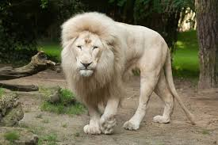

The lion (Panthera leo) is a large cat of the genus Panthera, native to Africa and India. It has a muscular, broad-chested body; a short, rounded head; round ears; and a dark, hairy tuft at the tip of its tail. It is sexually dimorphic; adult male lions are larger than females and have a prominent mane. It is a social species, forming groups called prides. A lion's pride consists of a few adult males, related females, and cubs. Groups of female lions usually hunt together, preying mostly on medium-sized and large ungulates. The lion is an apex and keystone predator.
The lion is the only member of the genus Panthera, and is the most widely
Some Types are;
- African Lion
An African lion's bite force is around 650-1000 PSI in strength, which although strong enough to kill large prey in a single bite, is actually smaller than some other big cats like jaguars and tigers.

- Asiatic Lion
The Asiatic lion's fur ranges in colour from ruddy-tawny, heavily speckled with black, to sandy or buffish grey, sometimes with a silvery sheen in certain lighting. Males have only moderate mane growth at the top of the head, so that their ears are always visible. The mane is scanty on the cheeks and throat, where it is only 10 cm (4 in) long. About half of Asiatic lions' skulls from the Gir forest have divided infraorbital foramina, whereas African lions have only one foramen on either side. The sagittal crest is more strongly developed, and the post-orbital area is shorter than in African lions. Skull length in adult males ranges from 330–340 mm (13–13+1⁄2 in), and in females, from 292–302 mm (11+1⁄2–11+7⁄8 in). It differs from the African lion by a larger tail tuft and less inflated auditory bullae.
- Transvaal LIon
The rare white lion comes from the Transvaal subspecies. These lions originate from a recessive genetic color mutation that leads to leucism. Though the mutation is to the same gene that causes albinism, leucistic lions are not albino because they still have colored eyes.

One of the most widely recognised animal symbols in human culture, the lion has been extensively depicted in sculptures and paintings, on national flags, and in literature and films. Lions have been kept in menageries since the time of the Roman Empire and have been a key species sought for exhibition in zoological gardens across the world since the late 18th century. Cultural depictions of lions were prominent in Ancient Egypt, and depictions have occurred in virtually all ancient and medieval cultures in the lion's historic and current range.
To know more about the Panthera Leo: Wikipedia.